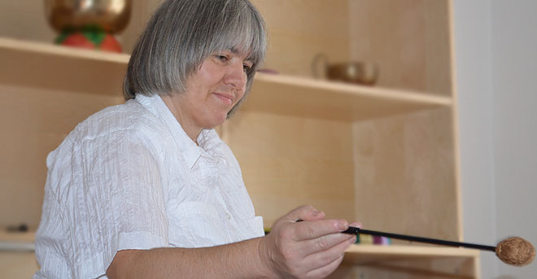
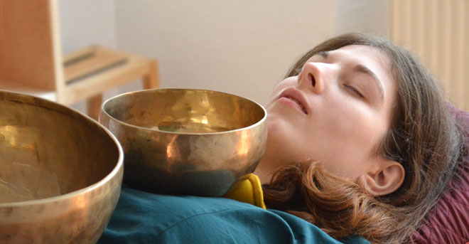
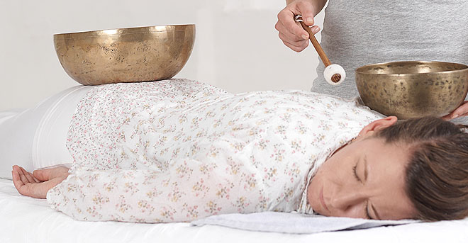
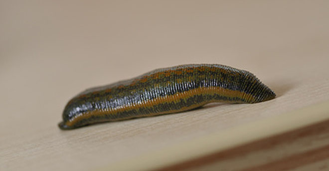
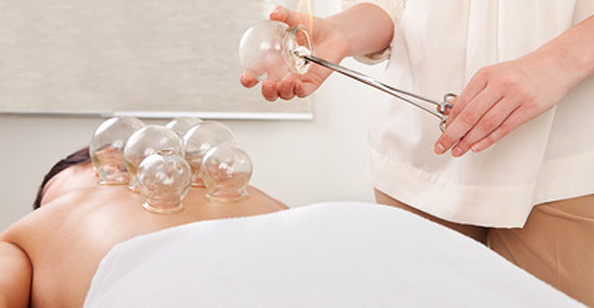
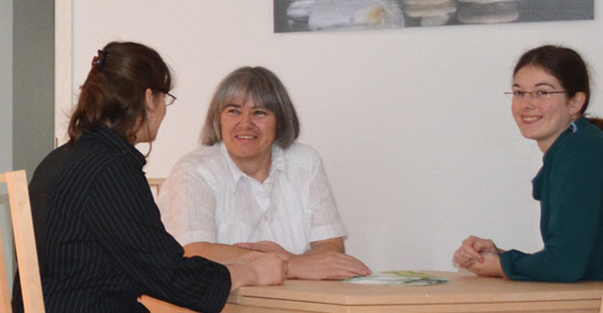

Als Heilpraktikerin begleite ich Sie auf einem individuellen Weg zur Gesundheit — mit bewährten Naturheilverfahren und persönlicher Zuwendung.
Aufgewachsen auf dem Land, waren Kräuter und Heilpflanzen von Kindheit an meine steten Begleiter. Ihre Wirkungsweise faszinierte mich — und legte den Grundstein für meinen Weg in die Naturheilkunde. Nach einem Berufsleben in der Landwirtschaft habe ich diesen Weg konsequent weiterverfolgt: Von 1993 bis 1997 studierte ich Naturheilkunde, 2013 erwarb ich die staatliche Zulassung als Heilpraktikerin.
Heute betreibe ich eine Hausbesuchspraxis im Raum Merseburg und Bad Lauchstädt. Ich nehme mir Zeit für Sie — für eine gründliche Anamnese und einen Behandlungsweg, der wirklich zu Ihnen passt. Nicht das Symptom, sondern der Mensch als Ganzes steht im Mittelpunkt.

„Allein die Dosis macht, daß ein Ding kein Gift ist."
ParacelsusWelches Verfahren für Sie und Ihre individuellen Beschwerden am besten geeignet ist, erarbeiten wir gemeinsam. Zusätzlich stehen je nach Beschwerdebild Komplexhomöopathie und Akupunktur zur Verfügung.

Pflanzenheilkunde gehört zu den ältesten Heilmethoden der Menschheit. Standardisierte Tinkturen und Aufgüsse wirken therapeutisch — mit deutlich weniger Nebenwirkungen als synthetische Präparate.

Die Vibrationen asiatischer Klangschalen lösen Muskelverspannungen und fördern tiefe seelische Entspannung. Klänge begleiten den Menschen seit Urzeiten und sprechen direkt das Nervensystem an.

Medizinische Blutegel setzen Hirudin und weitere Wirkstoffe frei. Bewährt bei Durchblutungsstörungen, Arthritis, Gicht und Tinnitus. Jede Anwendung dauert ca. 40–90 Minuten.

Schröpfen, Aderlass und Fasten — bewährte Methoden zur Stoffwechselanregung und Aktivierung der körpereigenen Selbstheilung. Eine der ältesten Säulen der Naturheilkunde.
Eigenblut wird entnommen und — wahlweise mit homöopathischen Mitteln oder Ozon angereichert — reinjiziert. Wirksam bei Allergien, Immunschwäche und chronischen Erkrankungen.
Der Kamineffekt erzeugt sanfte Trommelfellbewegungen. Bewährt bei Mittelohrentzündungen, Sinusitis, Tinnitus und Schwindel — besonders schonend für Kinder geeignet.
Autogenes Training, Progressive Muskelentspannung nach Jacobson und Klangschalen-Meditation — drei Wege zur Tiefenentspannung, leicht in den Alltag zu integrieren.
Mit hochkonzentrierter Kochsalzlösung nach Dr. Rieger — ohne OP, ohne Narkose, ohne Narben. Kosmetisch unsichtbar, sofort belastbar und bei Bedarf jederzeit wiederholbar.
Jede Behandlung beginnt mit einem persönlichen Gespräch. Ich nehme mir Zeit — für Ihre Geschichte, Ihre Beschwerden und Ihre Ziele.

Rufen Sie mich an oder schreiben Sie mir. Bei einem ersten Kontakt — telefonisch oder persönlich — erfahren Sie Genaueres über meine Therapiemöglichkeiten, und wir klären gemeinsam, wie ich Ihnen helfen kann.
Die Erstanamnese findet einmalig statt. Ich erfasse Ihre persönliche Krankengeschichte und aktuelle Situation umfassend. Bitte bringen Sie Befunde, Arztbriefe und Ihre Medikamentenliste mit. Planen Sie ca. 2 Stunden ein.
Nach Auswertung aller Daten erarbeite ich für Sie ein individuelles Therapiekonzept. Dauer und Häufigkeit der Behandlungen richten sich ganz nach Ihren persönlichen Bedürfnissen.
Vereinbaren Sie einen Termin telefonisch oder per E-Mail. Als Hausbesuchspraxis komme ich zu Ihnen — im Raum Merseburg und Bad Lauchstädt.
Uta Lissig
Heilpraktikerin034635 21590
0151 20187915
praxis@naturheilverfahren-merseburg.deSankt Ulrich 34
06246 Bad Lauchstädt
Hausbesuchspraxis — ich komme zu Ihnen. Termine nach Vereinbarung.